Custom sheet-metal fabrication job shop, about 120 employees, one plant. Week of December 15, 2025 (current week; the week of December 22 is partial); 13-week view from September 22, 2025; trend from January 30, 2023. Sources: ERP, shop-floor data collection, QMS, maintenance and HR exports (batch 20261003T152921Z-20250101). Weeks start on Monday; durations in working days.
1. On-time delivery and lead time
93.6%
On-time delivery
109
Jobs shipped
13.2
Median lead time (days)
17.4
90th-percentile lead time (days)
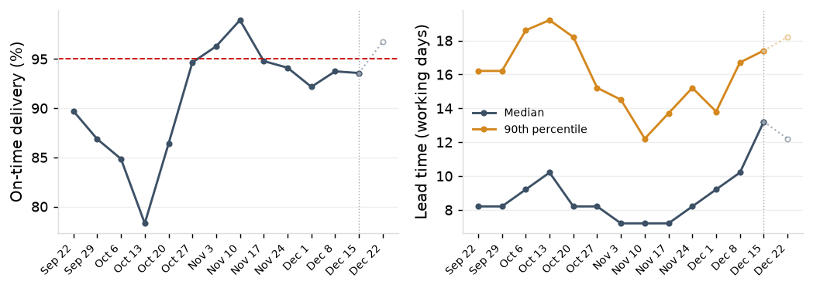
On-time delivery with the 95% target line, and median and 90th-percentile lead time, by ship week. The week of December 22, 2025 has 2 working days and is drawn lighter.
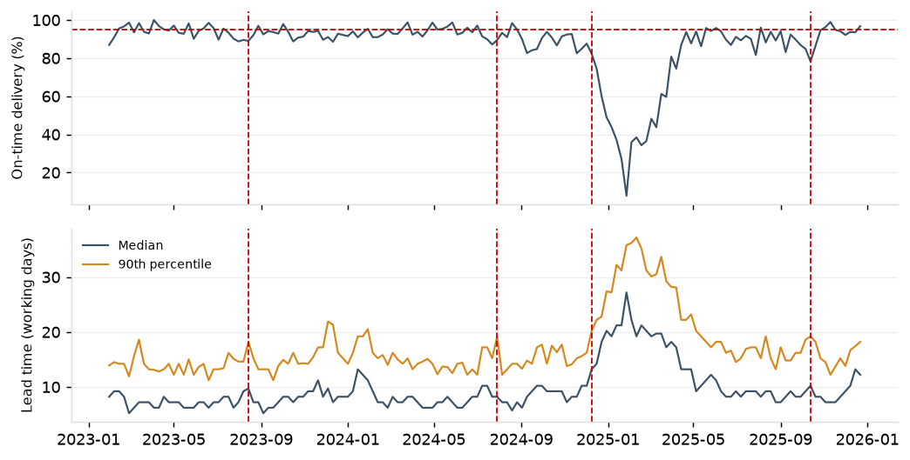
The same series from January 30, 2023, with the start of each of the 4 declines in on-time delivery marked.
On-time delivery: jobs shipped on or before the promised date, by ship week. Lead time runs from the release date at 10:00 to the ship date at 15:00, in working days; a scheduled Saturday counts as one. A decline starts in the first week the on-time delivery of the trailing 4 weeks is more than 5 points below that of the 13 weeks before them, at least 8 weeks after the last.
Jobs waiting at the lasers, 4-week mean; trigger above 49: beyond the trigger
0
Jobs released above 3 days of brake backlog, of 151 released
9
Lines promised inside the standard lead time, of 151 released
12
Short kits, of 42 kit checks
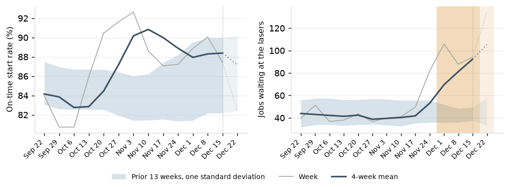
The on-time start rate and jobs waiting at the lasers by week, with the 4-week mean, the band of the prior 13 weeks and the weeks beyond the trigger shaded. The week of December 22, 2025 has 2 working days and is drawn lighter.
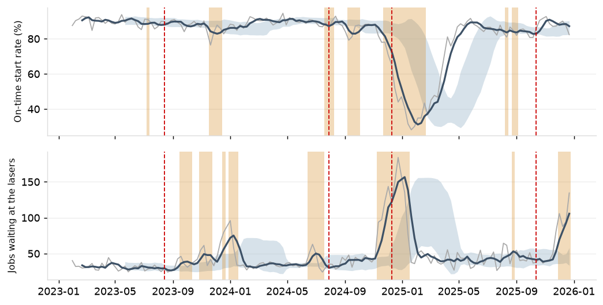
The same from January 30, 2023, with the declines in on-time delivery marked.
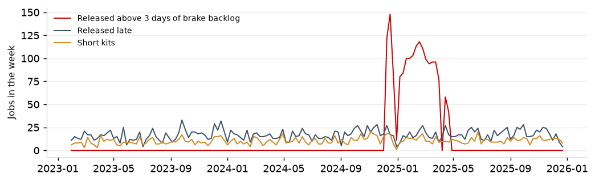
Jobs released above 3 days of brake backlog, lines promised inside the standard lead time, and short kits, by week.
Jobs released in
Flag
Share of jobs flagged
Late rate, flagged
Late rate, not flagged
2023 to 2025
Released above 3 days of brake backlog
12.3%
47.6%
8.7%
2023 to 2025
Promised inside the standard lead time
18.5%
27.4%
10.4%
2023 to 2025
Short kit at the kit check
32.2%
36.4%
8.4%
2025 Q2 to Q4
Released above 3 days of brake backlog
4.2%
12.2%
8.8%
2025 Q2 to Q4
Promised inside the standard lead time
19.1%
27.3%
4.7%
2025 Q2 to Q4
Short kit at the kit check
31.7%
32.4%
2.8%
Late rate of flagged and unflagged jobs; short kits among jobs with a kit check, late rate of short kits computed for this page.
On-time start rate: in-house operations planned to start in the week that had started by the planned date; operations planned before the job's release are left out. Jobs waiting at the lasers: mean daily jobs at the lasers in the week. Trigger: the 4-week mean adverse to the 13 weeks before by more than one standard deviation of those weeks. Brake backlog at release: the standard hours of brake operations waiting at 10:00 on the release date, at the brakes' actual-over-standard ratio, in days of crewed brake capacity. Promised inside the standard: a promise shorter than the standard 10, 15 or 20 days, rush included. Short kit: kit check result short (job-specific material only).
3. WIP and queue by work center
275
Jobs released and not shipped
50
Jobs at the brakes
94
Jobs at the lasers
1.2
Brake backlog at release (days)
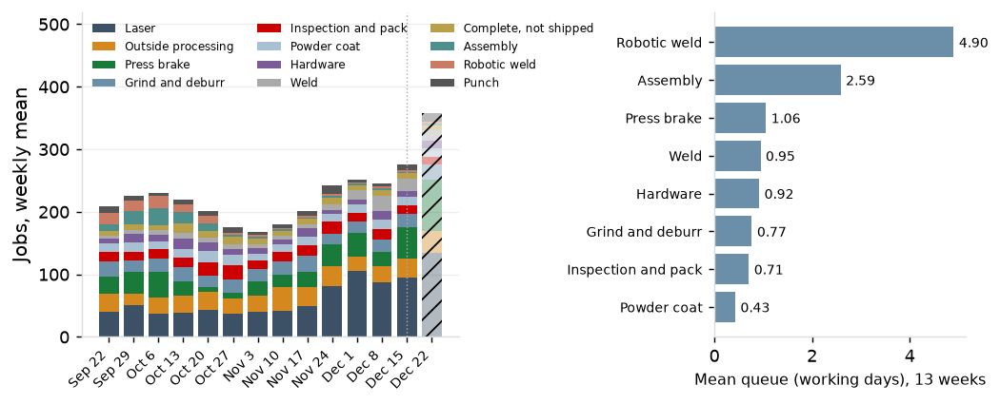
WIP by work center, weekly mean, and mean queue by work center for operations started in the 13 weeks. The week of December 22, 2025 has 2 working days and is drawn lighter.
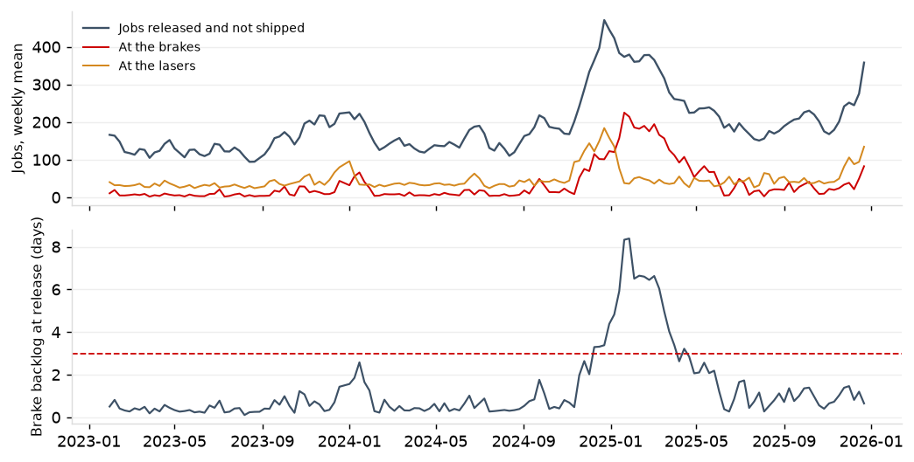
Jobs released and not shipped, jobs at the brakes and at the lasers, and brake backlog at release with the 3-day threshold, from January 30, 2023.
WIP is jobs released and not shipped, sampled every working day; a job is at the work center of the operation it is waiting for or running. Queue is the previous operation's end to this operation's first start, operations after the first, less the powder color-day wait, in working days. Brake backlog at release is the mean over the jobs released in the week.
4. Late jobs by attributed cause
7
Late jobs shipped
15
Lost days
1 of 7
Late jobs with no reason code
29.9%
No reason code, 13 weeks (127 late jobs)
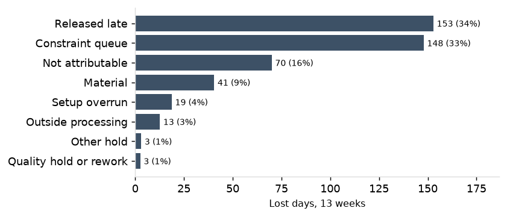
Lost days by attributed cause for jobs shipped in the 13 weeks to the week of December 15, 2025.
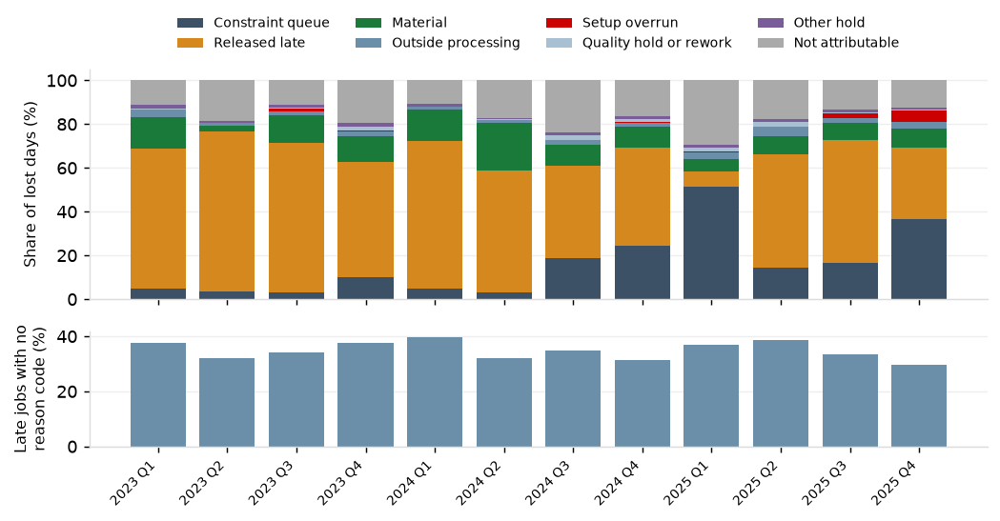
Cause shares of lost days and the share of late jobs with no reason code, by quarter shipped.
A job's lost days are its working days late. Lost days at a stage are the stage days above the median of on-time jobs of the same routing class shipped in the same quarter. Released late is allocated first, capped at days late; the days late remaining are split across the stages' lost days in proportion; days at stages with no matching rule are not attributable. The reason code is the late-reason code entered on the shipment.
5. Brake utilization against the queue curve
0.878
Brake utilization
1.27
Mean brake queue (days)
105
Brake operations started
2.00
Queue on the curve at this utilization (days)
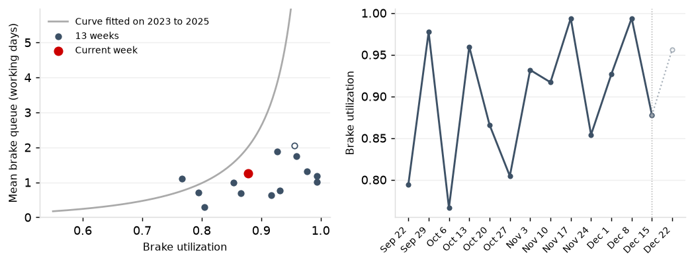
Mean brake queue against brake utilization for the 13 weeks on the curve fitted on 2023 to 2025, the current week marked; and brake utilization by week. The week of December 22, 2025 has 2 working days and is drawn lighter.
Brake
Utilization, current week
Utilization, 13 weeks
Operations, 13 weeks
Mean queue (days), 13 weeks
Downtime hours, 13 weeks
B1
1.000
0.968
242
0.93
24.3
B2
0.977
0.939
261
0.89
30.7
B3
0.992
0.832
357
1.08
30.6
B4
0.567
0.858
358
1.15
29.6
B5
1.000
0.920
242
1.19
3.8
The five brakes: utilization on crewed weekday shifts, operations, queue and downtime.
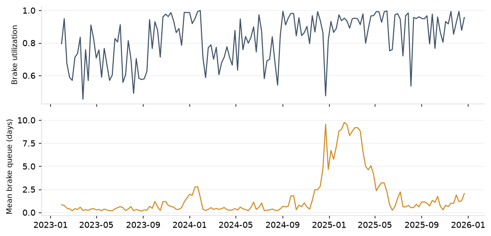
Brake utilization and mean brake queue by week from January 30, 2023.
Utilization is machine time (the union of labor transaction intervals on a machine) over scheduled hours net of downtime, Saturday and extended shifts included; for the individual brakes, on crewed weekday shifts only, capped at the scheduled hours net of downtime. Queue is the previous operation's end to this operation's first start, in working days. Curve: queue = k x u^(sqrt(2(m+1)) - 1) / (m(1 - u)), m the number of machines, k fitted by least squares on rolling 13-week windows of 2023 to 2025.
6. Overtime by attributed cause
8.0
Saturday labor hours at the brakes
0.0
Extended-shift labor hours at the brakes
13.8
Overtime labor hours, 13 weeks
100.0%
Enclosure and rush share, 13 weeks
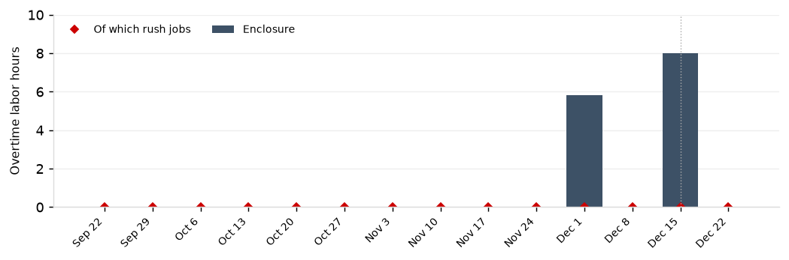
Overtime labor hours at the brakes by part family, with the hours on rush jobs marked. The week of December 22, 2025 has 2 working days and is drawn lighter.
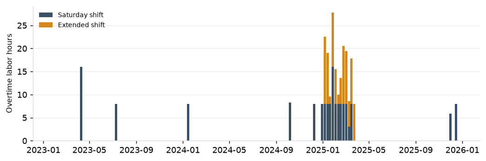
Overtime labor hours at the brakes by week from January 30, 2023, Saturday and extended shifts.
Overtime is labor hours at the brakes on Saturdays and after 22:00 on days with an extended second shift, attributed to the part family and the rush flag of the job worked.
7. Quoting
75.5%
Fixed quote met, jobs released in the week of November 17, 2025
80.9%
Quote table met, jobs released in the week of November 17, 2025
67.6%
Quotes sent within 3 days, of 278 sent
46.0%
Win rate, 13 weeks; 7.5% of quotes undecided
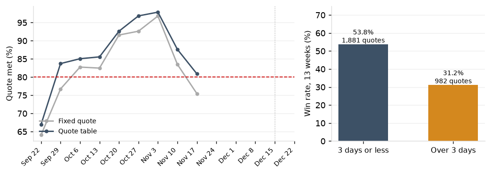
Share of non-rush jobs meeting the fixed quote and the quote table by release week, through the week of November 17, 2025, the latest with at least 95% of its jobs shipped; and win rate by turnaround for quotes sent in the 13 weeks. The week of December 22, 2025 has 2 working days and is drawn lighter.
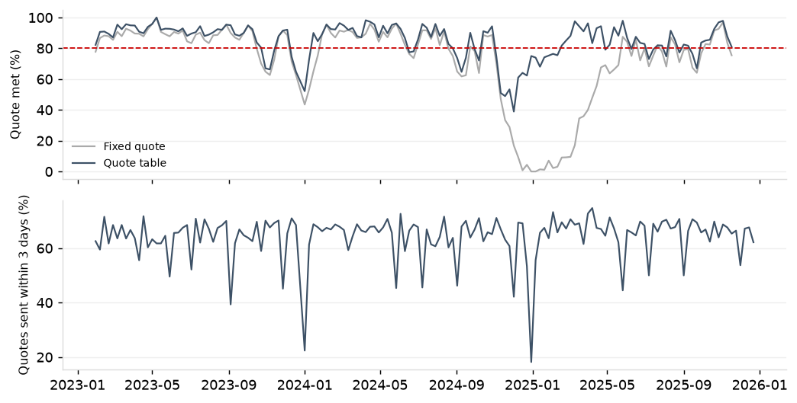
Quote hit rates by release week and the share of quotes sent within 3 days by week from January 30, 2023; the line is 80%.
A quote is met when the working days from the release day to the ship day are at or under it; rush lines are left out. The fixed quote is 10 days for repeat parts, 15 for new parts and 20 with outside processing. The quote table is the table fitted on 2023 to 2025 (Quoting and early warning from load, Table 2): the 80th-percentile lead time of the routing class and brake backlog band at release, rounded up, never below the fixed quote. Turnaround is weekdays from RFQ received to quote sent. Win rate is won over quotes sent, with no decision counted as not won.